BALI
史前時代
1624 荷西與明鄭時代
1683 清領時期
1920 日治時期
現今左岸
由於八里扼制淡水河河口南岸，背依之觀音山和對岸的大屯山都是極佳的航途指標，加上八里是南崁至台北盆地中唯一有較寬之沖積平原的地區，可追溯至七千年前之大坌坑文化，引領台灣進入新石器時代。
西班牙人與道明會士馬丁略(Bartolomé
Martínez)神父於1628年抵達淡水，在淡水河北岸淡水築城，而在為1624至1662年荷蘭人驅逐西班牙人後更是有效的控制八里地區。其主要的社群「八里坌社」（parrigon）
平均人口數約在一百卅人左右（三十戶），但因戰亂之關係，族群遷涉極為瀕繁。明鄭時期雖設天興縣統轄台灣北部，實質上只是因襲荷蘭人的政策，並未屯駐開發。
1683年6月明鄭叛將施琅攻台，台灣開始進入清帝國統治。台灣早期發展的重點在南部，至1709年開始有泉州人等，組陳賴章墾號開墾，八里才開始慢慢興起。1860年，因天津條約台灣開埠通商，淡水正式開港，為台灣第一個國際通商港口。而由於地形不利及港口大小因素，使得八里漸漸被滬尾港口取代。到了淡水商務蒸蒸日上帶到北台灣繁榮時，兩地差距已天壤之別了。
到了日本領台後，八里幾乎成了以眾漁為主的窮鄉，發展上也成了淡水的附鄉，1920年日本政府改變了地方制度，在八里設八里庄，並在台北州下設郡，與淡水、三芝、石門一街三莊同屬淡水郡轄管。雖日治時代結束之後廢郡、廢區，但八里在行政與居民生活上一直依賴淡水，兩岸間渡輪成為八里人的命脈所在。
1945年中華民國接收台灣後，改為臺灣省臺北縣淡水區八里鄉。1950年8月台灣行政區域重新調整，裁撤縣級區署，由縣府直轄各鄉鎮。2010年臺北縣改制為新北市後，改為八里區。

 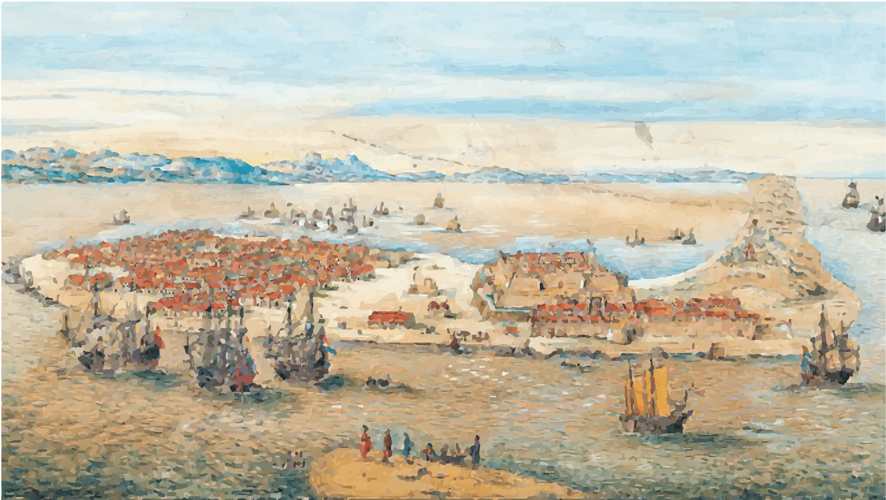
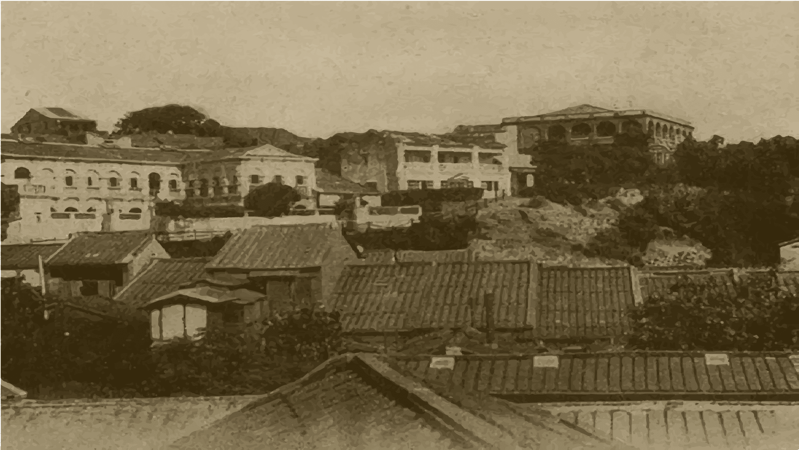
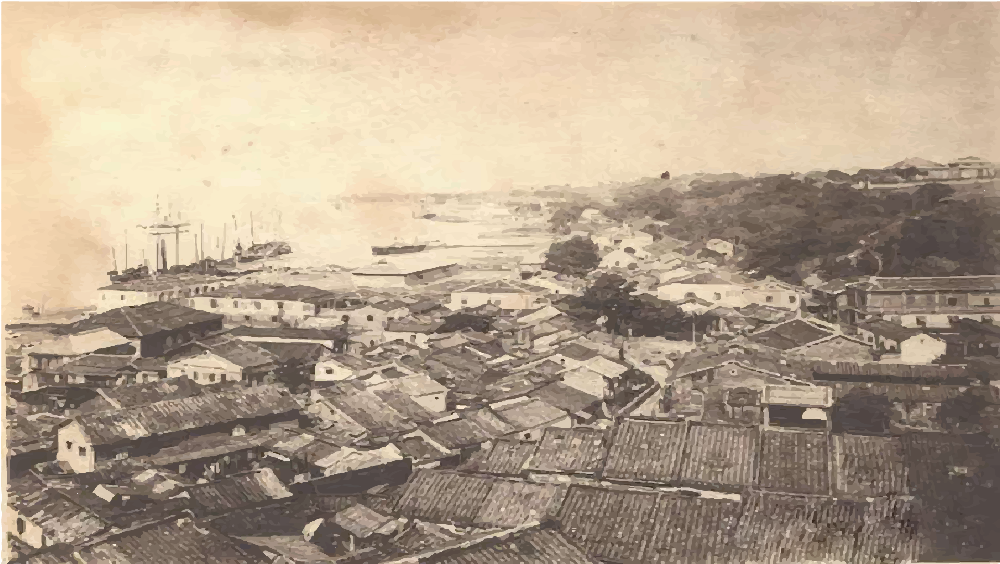
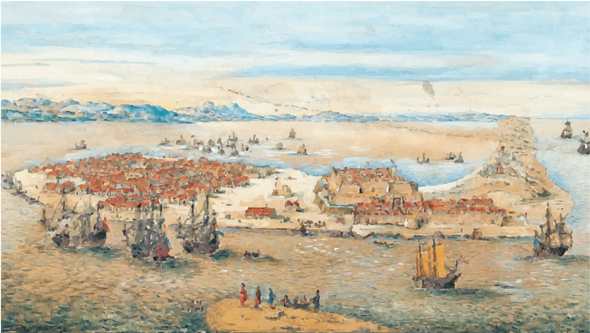
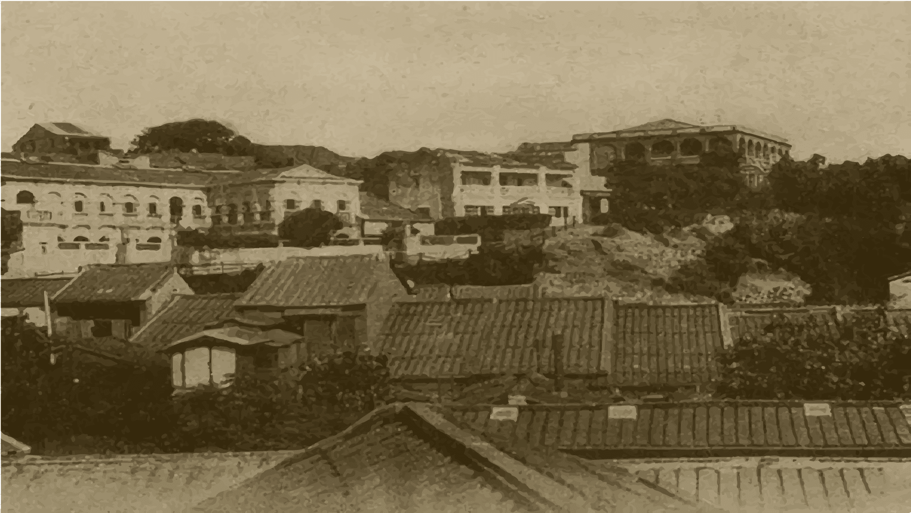
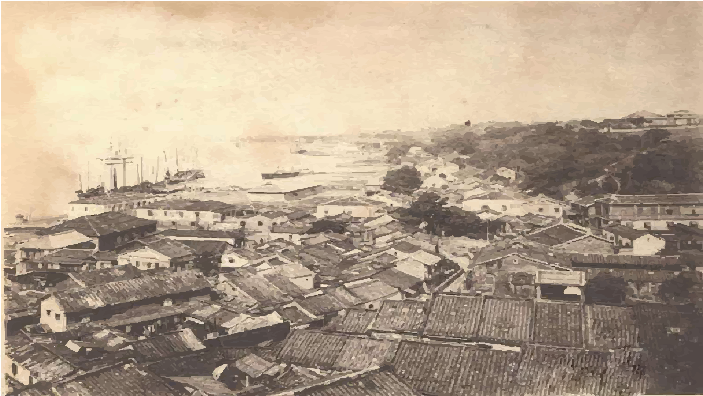

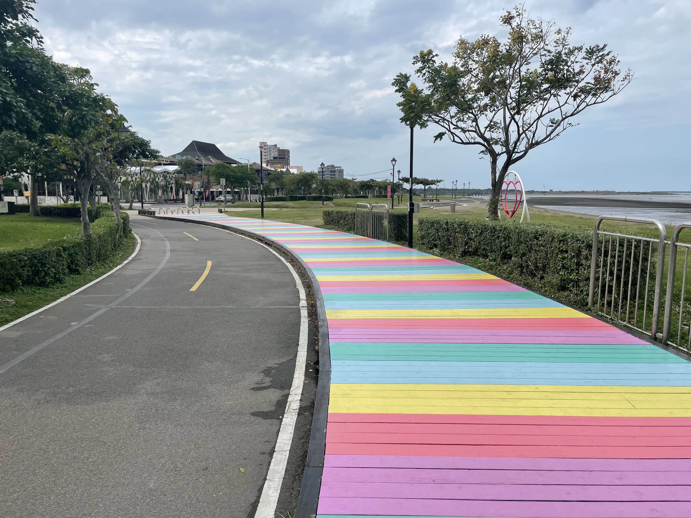
腳踏車道
八里左岸自行車道從觀音坑溪口起，一直到八仙海岸，全程約14公里，其地面平整，木棧道與水泥路面交錯，沿著淡水河岸而行...

50年代童玩
許多古早味玩具，透露出50~70年代的懷舊古早味零食...
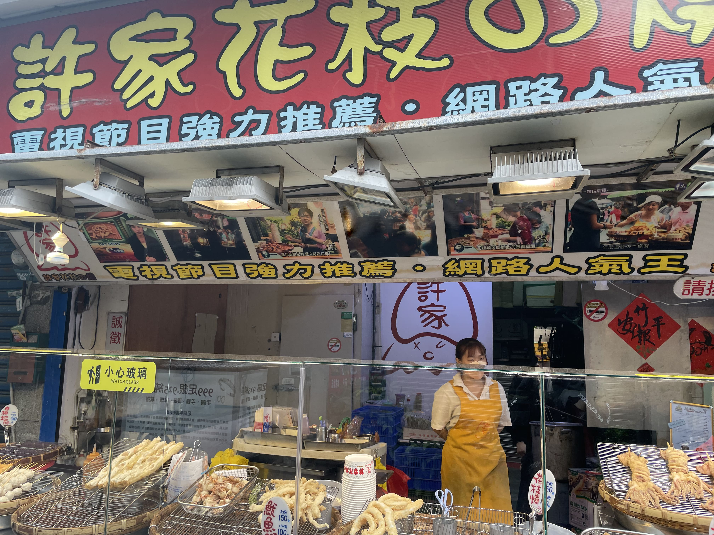
許家花枝燒
電視節目強力推薦的許家花枝燒，人絡繹不絕的真的生意很不錯...
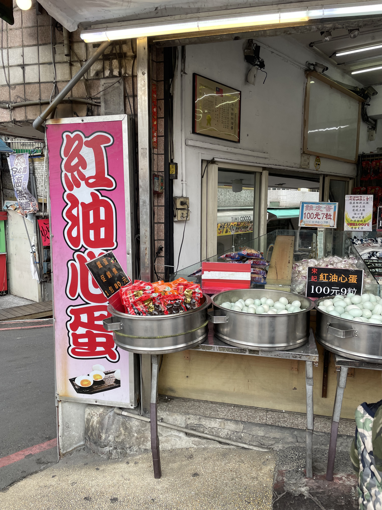
宋記油心鹹蛋
宋記的鴨蛋來自於氣候溫和的宜蘭，別於一般用池塘水養殖的養鴨場，他們的鴨子都用溪水養殖，生出來的鴨蛋幾乎都沒有腥味，非常香醇...
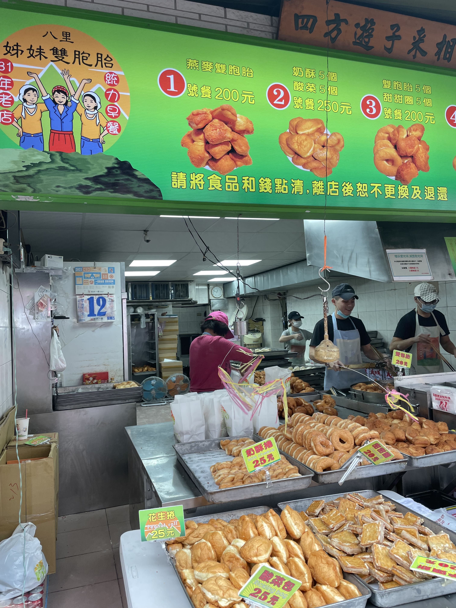
姊妹雙胞胎
招牌上有著姊妹花的圖樣，介紹充滿復古年代感，創立於1971年。因老闆是兩位雙胞胎姐妹，所以取名姊妹雙胞胎，目前已由第二代的三位姐妹接手...
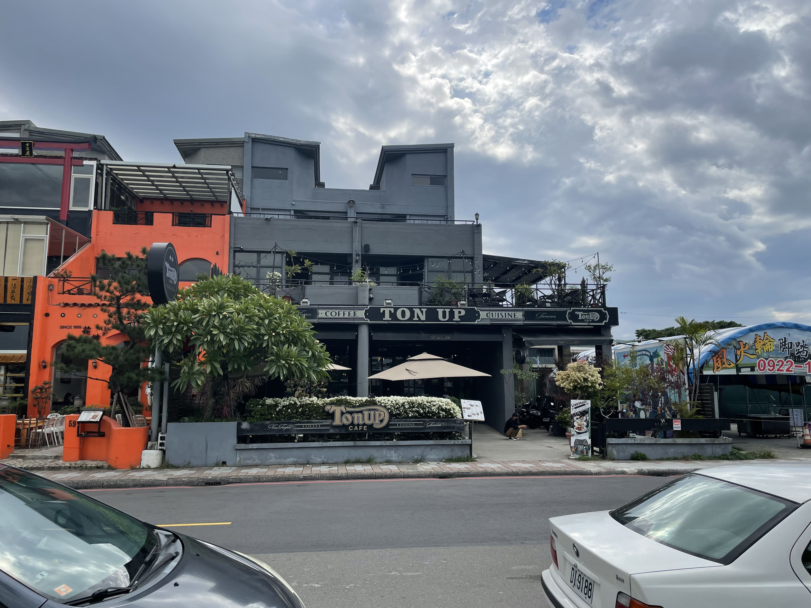
Ton Up Cafe
「Ton Up
Cafe」就位於新北市八里的觀海大道上，是一間以英式經典騎士風格與重機為主題的一間特色餐廳，不僅吸引不少重機愛好者前來，也有不少人是衝著他們家的餐點、自製甜點跟一望無際的淡水河畔美景而來...
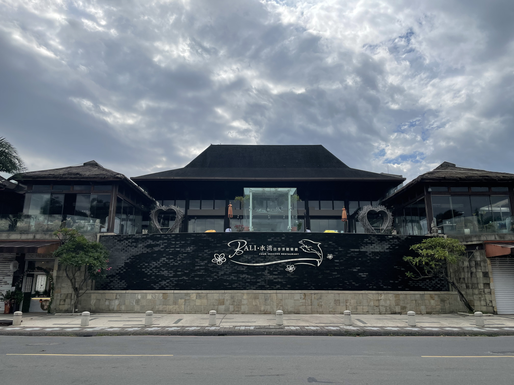
水灣BALI餐廳
如同店名水灣,皆是倚著河岸營造熱情奔放的南洋峇里島風格,在此點一杯充滿熱帶風情的特色調飲,抑或是享受南洋風味的料理,都將是相當浪漫的感受...

芭達桑主題餐廳
如同店名一般，具有原住民氣息的主題餐廳。寬敞的用餐區適合一家大小前來聚餐這裡的餐點選擇很多，餐點都充滿道地的原住民特色...

十三行博物館
為台灣第一座市立考古博物館，設立目的為保存及推廣十三行遺址的史前文化。十三行文化屬於北臺灣地區的鐵器時代，時間大約在距今1,800~500年前，是目前臺灣唯一確定擁有煉鐵技術的史前居民...
公共運輸
捷運
路線:搭乘捷運淡水信義線至關渡站
公車
車號:紅22
發車間距:每12-20分鐘發一班車
平日發車時間:頭班車:0530，末班車:2330
假日發車時間:頭班車:0545，末班車:2330
車號:紅13
發車間距:每12-20分鐘發一班車
平日發車時間:頭班車:0625，末班車:2100
假日發車時間:頭班車:0752，末班車:2110
渡船
價格:單程全票23元、半票12元
航班:周一~周五: 7:00~20:00
全年無休(10~15分/班)
週六~周日: 7:00~21:00
全年無休(3~5分/班)
自行開車
路線1:
臺北→關渡大橋→龍形路→龍米路→八里渡船頭老街
路線2:
中山高速公路→林口交流道→105線道→八里
腳踏車
租借店家:八里租借站
租借時間:
11月~3月(冬令)
平 日(星期一至星期五): 9:00~12:00，13:00~17:00
假 日(周末及國定假日): 8:00~18:00
4月~10月(夏令)
平 日(星期一至星期五): 9:00~12:00，14:00~19:00
假 日(周末及國定假日): 8:00~19:00